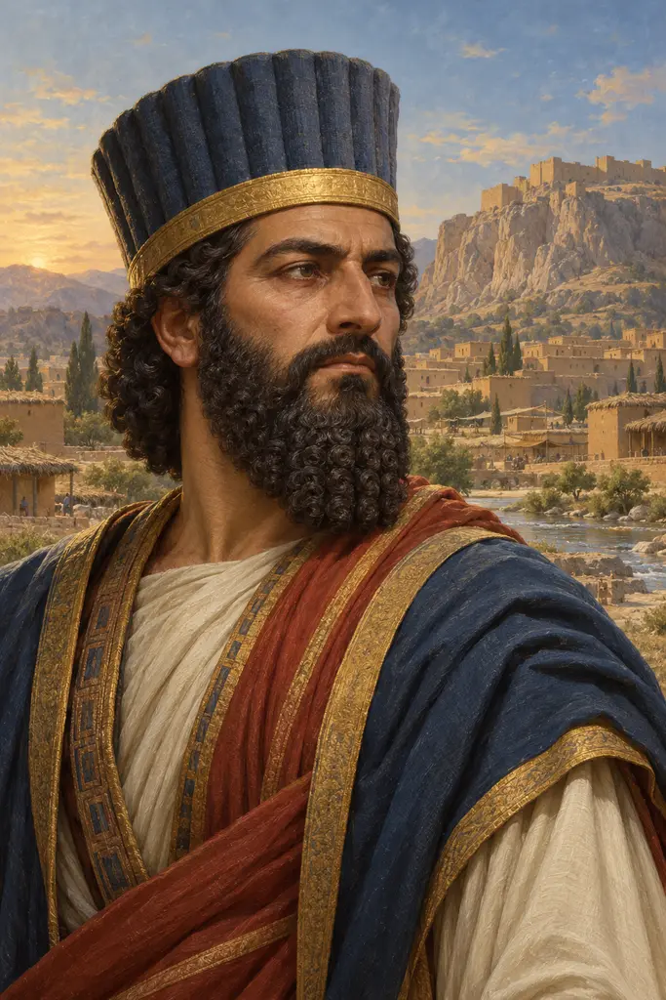
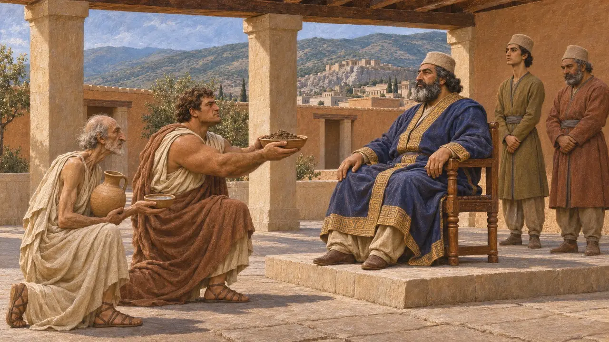
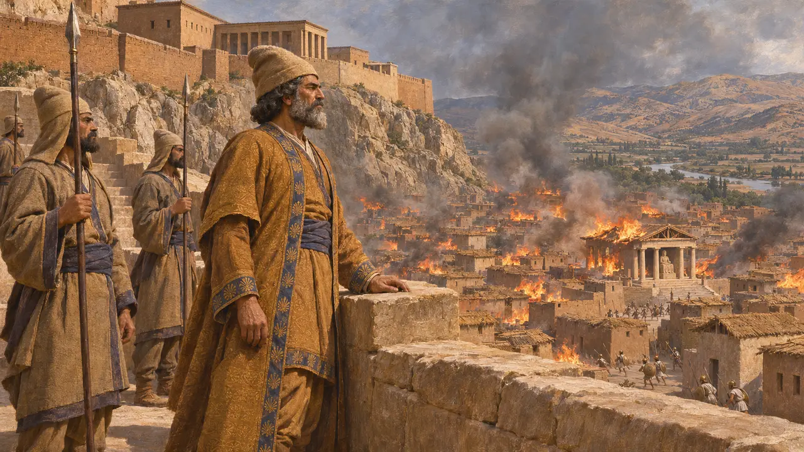
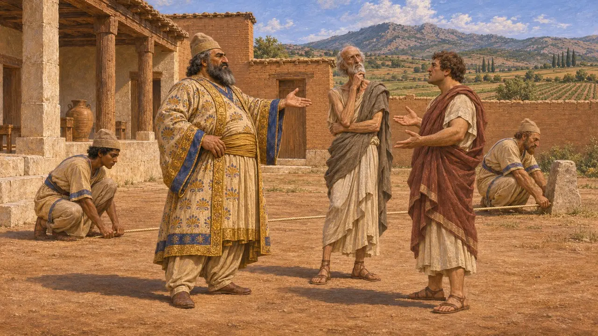
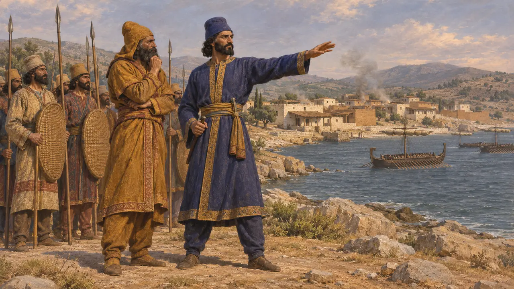
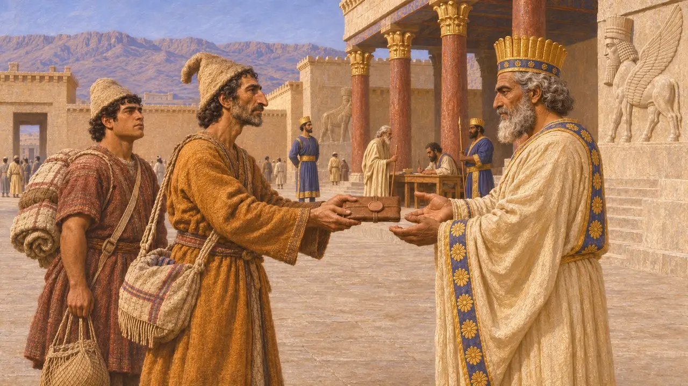

Artaphernes
Dareios'un kardeşi ve yaklaşık MÖ 513'ten itibaren Sardes satrabı; MÖ 490'daki komutanın babası
Hystaspes'in oğlu ve Dareios'un kardeşi Artaphernes, Sardes satrapı yapıldı ve İon İsyanı boyunca Pers egemenliğindeki batı Küçük Asya'yı yönetti. MÖ 498'de asiler aşağı şehri yaktığında hisarı elinde tuttu. Aynı adı taşıyan oğlu, MÖ 490 seferine Datis ile birlikte komuta etti. Her iki adam hakkında bilinenlerin neredeyse tamamı Herodotos'tan gelir; Persepolis tabletlerinde ise onlara ait olması muhtemel tek bir iz vardır.
Oyunda: Oyun Artaphernes'i Herodotos'u izleyen bir kronik notunda anar: İonlar MÖ 498'de aşağı kenti yaktığında Sardes hisarını elinde tutar; oğlu ise MÖ 490 seferini Datis'le birlikte yönetir.

Kralın Sardes'teki kardeşi
Antik anlatıHerodotos'a göre Dareios, İskit seferinden döndükten sonra baba bir kardeşi Artaphernes'i Sardes'e vali atadı. MÖ 507 dolaylarında ittifak arayan Atinalı elçiler ona gelip toprak ve su verdiler, ancak Atina daha sonra bu eylemi tanımadı. Sonraları sürgündeki Hippias Sardes'teyken Artaphernes, Atinalılara güvende kalmak istiyorlarsa Hippias'ı geri almalarını söyledi.
Herodotus 5.25, 5.73, 5.96

Naksos ve Sardes'in yakılışı
Antik anlatıHerodotos'a göre Miletli Aristagoras, Artaphernes'i Naksos'a bir saldırıyı desteklemeye ikna etti; Artaphernes de Dareios'un onayını aldı. Kuşatma başarısız oldu ve Aristagoras bunun üzerine İonia'yı isyana kaldırdı. MÖ 498'de İonlar, Atinalılar ve Eretrialılar Sardes'i ele geçirdiler, ancak Artaphernes'in elinde tuttuğu hisarı alamadılar. Kamış çatılı evler arasında yayılan bir yangın, tanrıça Kybebe'nin tapınağını yaktı.
Herodotus 5.30-36, 5.99-102

Histiaios ve İonia'nın düzenlenmesi
Antik anlatıHerodotos'a göre Artaphernes, Histiaios'a, Aristagoras'ın giydiği ayakkabıyı kendisinin diktiğini söyler. Histiaios yakalandıktan sonra Artaphernes ile Harpagos adlı bir Pers komutan onu Sardes'te kazığa oturtmuş ve başını Susa'ya göndermiştir; Herodotos bunun Dareios'un hoşuna gitmediğini söyler. MÖ 493'te Artaphernes İon kentlerini anlaşmazlıklarını hakem yoluyla çözmeye zorlamış, topraklarını parasang ile ölçtürmüş ve Herodotos'un kendi zamanında hâlâ geçerli olduğunu söylediği bir haraç belirlemiştir.
Herodotus 6.1, 6.28-30, 6.42

Aynı adı taşıyan oğul
Antik anlatıMÖ 490'da Dareios, Medli Datis'i ve kendi yeğeni olan Artaphernes oğlu Artaphernes'i Eretria ve Atina üzerine gönderdi. Herodotos'a göre Eretria'yı aldılar, ancak Marathon'da yenildiler. Herodotos daha sonra bu genç Artaphernes'i, MÖ 480'de Kserkses'in ordusunda Lidyalılarla Mysialıların komutanı olarak anar.
Herodotus 6.94, 6.101, 6.113, 7.74

Pers kayıtları neyi gösteriyor
BelgelerdeBehistun yazıtı, Lidya ve Sardes'in Farsça adı olan Sparda'yı Dareios'un ülkeleri arasında sayar. Hiçbir kraliyet yazıtı Artaphernes'in adını anmaz; o, MÖ 522'deki altı yardımcı arasında da değildir. Bir Persepolis Tahkimat tableti, Sardes'ten gelen ve D. M. Lewis'in ona ait olduğunu saptadığı bir adla mühürlenmiş belge taşıyan yolcuları kaydeder. Bunun dışında yalnızca Yunan yazarlardan bilinir.
DB §6, §68; D. M. Lewis, Sparta and Persia, 1977
Kaynaklar
- Herodotus, Histories, books 5-7
- D. M. Lewis, Sparta and Persia, 1977
- DB (Behistun inscription of Darius)
- P. Briant, From Cyrus to Alexander, 2002
- A. Kuhrt, The Persian Empire: A Corpus of Sources from the Achaemenid Period, 2007